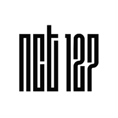

NCT 127
NCT 127 adalah unit yang berbasis di kota Seoul Korea Selatan. Memiliki 10 anggota dan melakukan debut
pada 7 Juli 2016 dengan mini album pertama mereka yaitu NCT#127.
NCT Dream
NCT Dream adalah unit khusus yang beranggotakan remaja dengan usia belasan tahun. Unit ini melakukan debut
pada 25 Agustus 2016 dengan single Chewing Gum yang beranggotakan 7 orang.
WayV
WayV atau WeishenV adalah unit NCT yang berbasis di Tiongkok atau dikenal juga dengan NCT China. Memiliki 7
anggota dan melakukan debut pada 7 Januari 2019 dengan mini album The Vision.